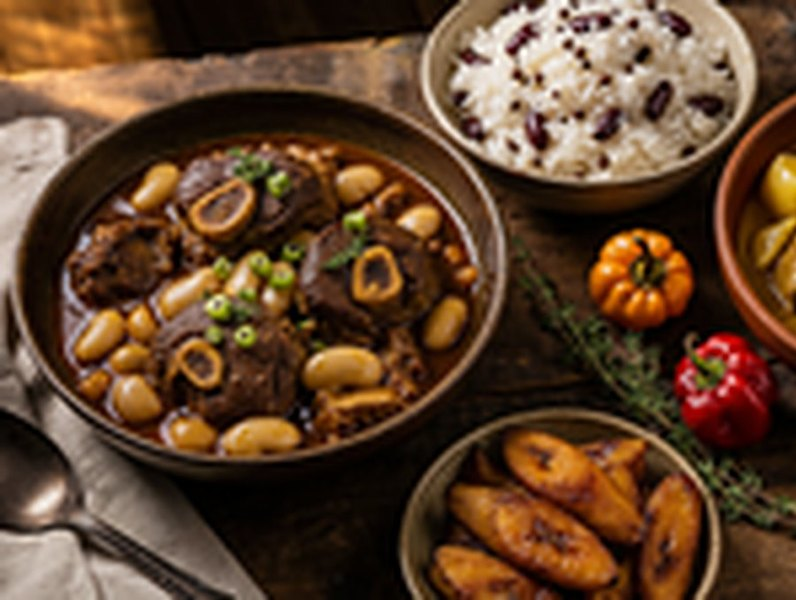

Recipe of the week · Nov 26 – Dec 2Receta de la semana · 26 nov – 2 dic
Rabo Encendido with Tostones
Cuban-style oxtail, slow-braised in red wine with peppers and tomato until it falls off the bone. Oxtail is $6.99 a pound this week, and the wine for the pot is on sale too.Rabo de res al estilo cubano, cocinado lento en vino tinto con ajíes y tomate hasta que se despega del hueso. El rabo está a $6.99 la libra esta semana, y el vino para la olla también está en oferta.

Feeds 6 for about $40Para 6 por unos $40⏱ About 4 hrs, mostly simmeringUnas 4 h, casi todo a fuego lento🍽 Serves 66 porciones🔥 StovetopEstufa🍷 Red wine braiseGuisado en vino tinto
IngredientsIngredientes
- 4 lb imported cut-up beef oxtailrabo de res en trozosON SALE
- 2 cups Gato Negro red wine (about ⅔ of the bottle)vino tinto Gato Negro (unos ⅔ de la botella)ON SALE
- 2 yellow onions, choppedcebollas amarillas picadasON SALE
- 1½ lb Idaho potatoes, peeled and cut in large chunkspapas Idaho peladas en trozos grandesON SALE
- 3 green plantains, for tostonesplátanos verdes, para tostonesON SALE
- 2 avocados, sliced, to serveaguacates en lascas, para servirON SALE
- 1 each green and red bell pepper, choppedají verde y ají rojo picados
- 6 cloves garlic, minceddientes de ajo machacados
- 1 can tomato sauce (8 oz) + 2 tbsp tomato pastesalsa de tomate (8 oz) + 2 cdas de pasta de tomate
- 2 cups beef broth or watercaldo de res o agua
- 1 tsp each ground cumin and dried oregano, plus 2 bay leavesde comino y de orégano seco, más 2 hojas de laurel
- salt, black pepper and oil (for browning and frying)sal, pimienta negra y aceite (para dorar y freír)
- white rice to servearroz blanco para servir
How to make itPreparación
- 1Season the oxtail with salt, pepper and the cumin. Heat 3 tablespoons of oil in a heavy pot and brown the pieces in batches, 8 to 10 minutes, until dark on all sides. Set aside.Sazona el rabo con sal, pimienta y el comino. Calienta 3 cucharadas de aceite en una olla pesada y dora los trozos por tandas, 8 a 10 minutos, hasta que estén bien dorados. Reserva.
- 2In the same pot, cook the onions and peppers 6 minutes until soft. Add the garlic and tomato paste and stir 1 minute.En la misma olla, sofríe la cebolla y los ajíes 6 minutos hasta que ablanden. Agrega el ajo y la pasta de tomate y revuelve 1 minuto.
- 3Pour in the wine and scrape up the brown bits on the bottom. Let it bubble 5 minutes, then add the tomato sauce, broth, oregano, bay leaves and the oxtail.Echa el vino y raspa lo dorado del fondo. Deja hervir 5 minutos y agrega la salsa de tomate, el caldo, el orégano, el laurel y el rabo.
- 4Cover and simmer on low about 3 hours, stirring now and then, until the meat falls off the bone. In a pressure cooker it takes about 50 minutes.Tapa y cocina a fuego bajo unas 3 horas, revolviendo de vez en cuando, hasta que la carne se despegue del hueso. En olla de presión toma unos 50 minutos.
- 5Add the potatoes for the last 30 minutes, uncovered, so the sauce thickens. Skim off the fat on top and taste for salt.Agrega las papas los últimos 30 minutos, destapado, para que espese la salsa. Quita la grasa de encima y prueba de sal.
- 6For the tostones, peel the plantains and cut them in 1-inch pieces. Fry at 350°F for 3 to 4 minutes, flatten each one, then fry again 2 to 3 minutes until crisp and salt them. Serve the oxtail over white rice with tostones and sliced avocado.Para los tostones, pela los plátanos y córtalos en trozos de 1 pulgada. Fríelos a 350°F de 3 a 4 minutos, aplástalos y fríelos otra vez 2 a 3 minutos hasta que estén crujientes, y échales sal. Sirve el rabo sobre arroz blanco con tostones y aguacate.
Make it your ownHazlo a tu gusto — Goat meat ($4.99/lb this week) cooks the same way in about 2 hours. Want a Spanish red instead? Tres Ríos is 3 for $10.La carne de chivo ($4.99/lb esta semana) se cocina igual en unas 2 horas. ¿Prefieres un tinto español? Tres Ríos está 3 por $10.
Every ThursdayCada jueves
A new ad, a new recipe.Nueva oferta, nueva receta.
We pick one dinner each week from what's on sale: meat, produce and the pantry aisle. Cook it, tag us, we'll share it.Cada semana elegimos una cena con lo que está en oferta: carnes, frutas y verduras y la despensa. Cocínala, etiquétanos y la compartimos.